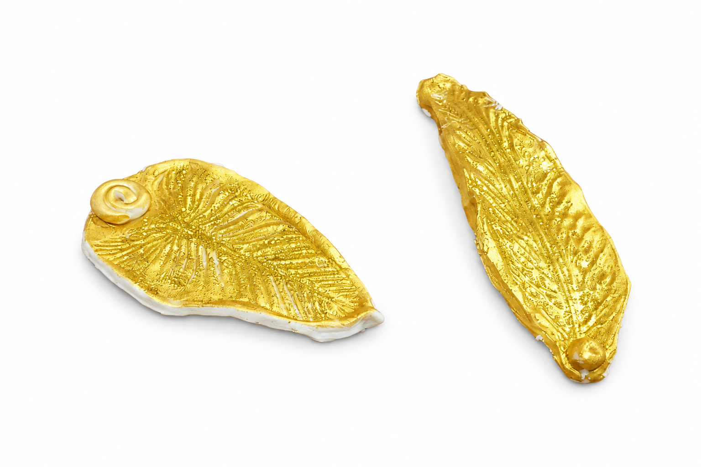

Este portasahumerios fue elaborado de forma artesanal utilizando una mezcla moldeable y acabado con pintura metalizada dorada. Su diseño reproduce la forma y textura natural de una hoja, logrando una pieza elegante y decorativa.
El objetivo de este proyecto es demostrar cómo los materiales simples pueden transformarse en objetos funcionales y artísticos mediante técnicas de moldeado, texturizado y pintura.
La pieza cuenta con una cavidad en uno de sus extremos para sostener varillas de sahumerio de manera segura, permitiendo recoger las cenizas durante su uso.
Además de su función práctica, este portasahumerios aporta un valor estético que favorece la decoración de diferentes ambientes, creando espacios de relajación y armonía.
Con este trabajo se busca fomentar la creatividad, el desarrollo de habilidades manuales y la valoración de los procesos artesanales.